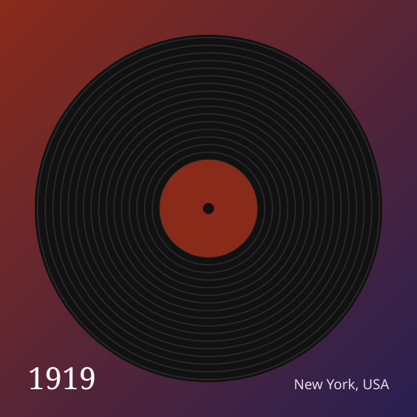

The ballad that convicted Robert Ford

Robert Ford shot Jesse James in the back for the reward, was pardoned, and never escaped the song. "The dirty little coward that shot Mister Howard" was passed around as a public verdict the courts never delivered.
Bentley Ball recorded it for Columbia (A3085) in 1919, one of the earliest commercial versions. It is a folk court in waltz time, and Ford is still guilty in it.